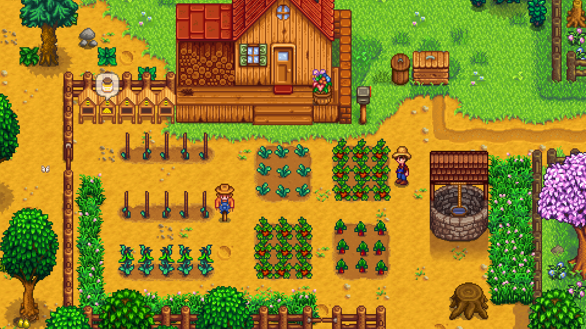

Stardew Valley é um jogo de simulação de fazenda desenvolvido por ConcernedApe. Lançado em 2016, o jogador herda uma fazenda decadente e tem a tarefa de transformá-la em uma próspera propriedade agrícola. O jogo combina elementos de agricultura, mineração, pesca, criação de animais e interações com personagens locais. Além disso, os jogadores podem explorar cavernas misteriosas, participar de festivais na cidade e até mesmo desenvolver relacionamentos românticos. Stardew Valley é elogiado por sua jogabilidade relaxante, charme pixelizado e a capacidade de os jogadores moldarem sua própria narrativa agrícola.
O mapa da fazenda em Stardew Valley é o local onde os jogadores cultivam colheitas, criam animais e constroem estruturas. Existem quatro mapas de fazendas diferentes para escolher: Padrão, Rio, Floresta e Montanha. Cada um tem características únicas, como espaço para pesca, mineração ou cultivo de árvores.

A cidade principal de Stardew Valley é um cenário vibrante e essencial para a experiência do jogo. Desde a Fazenda do Pierre, que fornece sementes e utensílios agrícolas, até o Saloon do Gus, onde eventos sociais e interações sociais ocorrem, cada local desempenha um papel crucial.
A mina em Stardew Valley é uma fonte valiosa de minérios, gemas e desafios. Descendo por vários níveis, os jogadores enfrentam monstros, coletam recursos e avançam na trama, sendo essencial para o progresso na fazenda.

Os chapéus podem ser colocados em: Crianças (no estágio 4) e cavalos. Eles podem ser removidos segurando outro chapéu e clicando sobre eles novamente; isso vai dropar o chapéu antigo, mas não colocará o novo, a menos que você o faça novamente. Espantalho Raro 3 (Alien). Eles podem então ser trocados por outro chapéu, mas só podem ser totalmente removido quebrando o espantalho raro que deixa cair os dois itens. Ouriços-do-mar em Lagos de Peixes segurando o chapéu e clicando no lago. Eles podem ser removidos abrindo o inventário do tanque de peixes e tirando o chapéu.
Os Calções Roxos da Sorte (Springobjects789.png e Springobjects071.png) do Prefeito Lewis tem vários segredos. Costurar os Springobjects789.png Calções roxos da sorte com uma Barra de ouro produz os Springobjects071.png Shorts Roxos da Sorte. Eles são equivalentes aos Calções roxos da sorte para completar a missão ou ativar os outros segredos, mas também podem ser usados pelo jogador para uma reação divertida da Marnie e do Lewis. Os Shorts Roxos da Sorte também podem ser adquiridos colocando uma escadaria no slot de calça do jogador. Colocando-os na sopa do Luau obtém uma resposta única do Governador e do Lewis. Colocando-os no estande da Feira do Vale do Orvalho desqualifica o jogador, e Lewis dá ao jogador Token.png750 Fichas-Estrela como um suborno para manter seu segredo. Marnie também dá um diálogo único na Feira depois de ver os calções no estande. Dando a Lewis seus Calções Roxos da Sorte enquanto ele está visitando a Ilha Gengibre fará com que ele os use como traje de praia por 28 dias.
Transformando crianças em pombas desbloqueia vários Easter eggs. Você pode receber um misterioso Telefonema: "Você coloca o telefone na orelha, e tudo que escuta é uma estática irritante e abrasiva. Mas espera... no fundo de tudo, você consegue entender alguma coisa... uma voz sobrenatural... 'V-O-C-Ê N-O-S A-B-A-N-D-O-N-O-U' ". Isso não acontece mais quando você desbloqueia o spawn do boneco amaldiçoado abaixo. Na Fazenda Padrão, assistindo TV no outono 26 e escolhendo "???" vai mostrar um Boneco antigo na tela da TV com uma mensagem estranha: "Você trouxe isso a si mesmo... agora estou livre... Hee hee hee!", e um Boneco antigo sairá da TV. Depois disso, uma Boneco antigo amaldiçoado voará e atacará os jogadores na frente do Altar Negro do Egoísmo. Quando morto, ele se transforma em um grande pássaro preto e voa para longe. Saindo e entrando novamente na Cabana da Bruxa, a boneca renascerá. (Matar este boneco conta para o Metas de Erradicação de Monstros de matar 200 Morcegos) Na Fazenda Quatro Cantos, os jogadores podem pegar um boneco antigo uma vez enquanto pescam. Se você transformou várias crianças em pombos, há 15% de chance de que eles voem em formação no Cume.